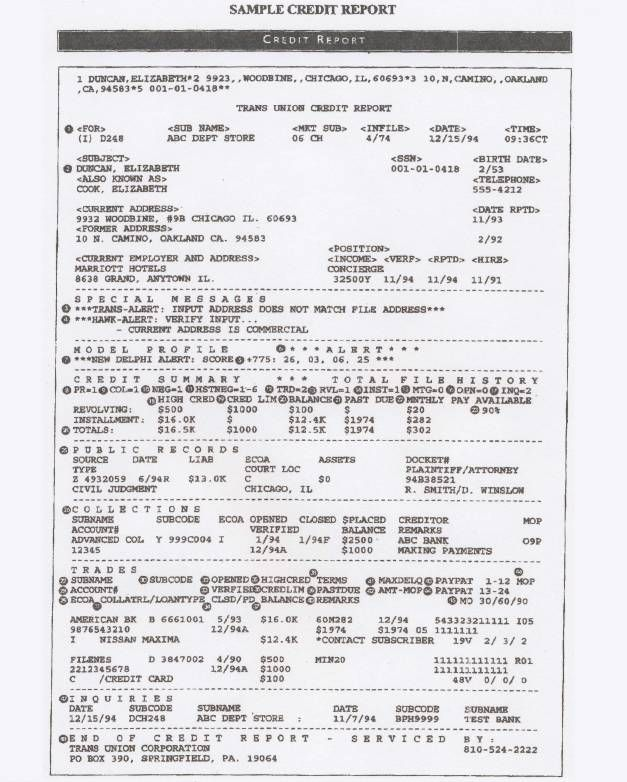

- Get Your Free Credit Reports | Credit Karma
Accessing your credit report is an important part of managing your credit health through the COVID-19 outbreak. TransUnion is pleased to offer you free weekly credit reports online through April 2021 as part of our commitment to supporting all Americans during this difficult time.Get your free report now at annualcreditreport.com. - Check Your FREE Credit Score & Report. Totally Free ...
Full credit report. We make it easy to understand all the info in your credit file, so you know where you stand. Six years’ analysis. ... Based on a survey of 958 TotallyMoney credit report customers . Stay one step ahead. Live credit score. We show your most recent credit score happenings, so you can track changes in real time. - What's On My Full Credit Report? | Credit.com
Check your TransUnion credit report with Credit Karma. Full credit report services? Remember. Be aware that repeatedly applying for credit can harm your chances of getting credit, because lots of credit searches might indicate you’re having problems. You can apply for your credit record as often as you like though. - freecreditreport.com: No Credit Card Needed.
Free Credit Score: Check your Credit Report Online. Lenders (like credit card issuers) use credit score scores to assist predict danger, and their opinions are those that matter most in the end. Like every credit card utility, different elements can have an effect on your approval resolution. - Free Credit Score: Check your Credit Report Online
A credit report can help when buying a house or car. Learn more about when, why and how you should get a free credit report. Personal. Products & Services. Equifax Premium Products. Get peace of mind when you choose from our comprehensive 3-bureau credit monitoring and identity theft protection plans. - How to check your credit report - Money Advice Service
Credit Report 101 From the latest information on Credit Reports, Identity Theft, to videos and credit calculators, our blog is an excellent resource for helping you navigate "all things credit." Infographic: Reading a Credit Report - Free Credit Report - Experian
What Is The Highest Credit Score Possible. The pattern credit report additionally incorporates definitions of some difficult terminology found in the report. Experian, Transunion and Equifax every has its own websites, where it would give you a free credit report for 30 days. That is the only web site to get your free credit report. - Get a Free Credit Report | Equifax®
Once your Multi-Agency Credit Report has been generated, click the ‘Download Printable Report’ link, found at the bottom of your Credit Report. If this option doesn’t show for any reason please get in touch via email, secure message through your account, or call us free on 0800 086 9360 and we will assist you further. - Annual Credit Report.com - Home Page
How to get your Annual Credit Report from Experian. Under federal law you are entitled to a copy of your credit report annually from all three credit reporting agencies - Experian, Equifax ® and TransUnion ® - once every 12 months. To get your Experian annual credit report online, and by phone or mail, visit www.AnnualCreditReport.com. - Free Credit Reports | FTC Consumer Information
It can be helpful to think of a credit score as a letter grade you get in school, while a credit report is like a listing of all the homework, tests and quizzes that go into earning that grade. Credit Karma offers free credit reports and free credit scores from Equifax and TransUnion, two of the three major consumer credit bureaus. Speaking of ...
Get a better credit score
97% of customers recommend us to improve your credit score
Get my free reportNo harm to your credit rating
Free forever
TrustpilotFinancial Conduct Authority Authorised & Regulated
Improve your credit score
Full credit report
We make it easy to understand all the info in your credit file, so you know where you stand.
Six years’ analysis
We tell you why you got your credit score, what's affecting it, and how to improve.
Easy error correction
If banks and lenders have the wrong info, it'll be wrong in your credit file. So, we've made it easy to fix any errors.
91% of customers
better understand their credit score after seeing their TotallyMoney analysis*
Based on a survey of 958 TotallyMoney credit report customers
Stay one step ahead
Live credit score
We show your most recent credit score happenings, so you can track changes in real time.
Credit score timeline
See your credit score history and watch how you're improving.
Personalised updates
We always let you know when your score changes and why.
“TotallyMoney keep me informed on a regular basis about what’s happening
”Mary
Get my free reportGet your best deal
Best credit matches
We know how to find the best offers for you, based on what's in your credit file and what lenders are looking for.
Pre-approved offers
Rejection harms your credit rating. That's why we show you the lenders that can give you a YES before you apply.
Guaranteed rates
Often, you don't get the rate advertised. That's why we challenge lenders across the UK to stick to the rate shown.
“Good info — helps you get the best deals on credit cards
”Barry
TrustpilotSee your credit score work for you
Get your credit check now, for free.
Get my free reportWe're on a mission to improve the UK's credit score and help people move on up to a better future.
Services
Credit Report Credit Cards Loans MortgagesCompany
About us Careers Contact ComplaintsGuidance
FAQs Guides Blog PressLegal
Privacy T&Cs Cookies Privacy T&Cs Cookies HelpTotallyMoney is an independent credit broker, not a lender. Our comparison service works with a wide range of lenders and other brokers from across the market. Other credit products may also be available to you. Though we may be paid a fee by lenders or brokers this never influences how our products are ranked.
We don't provide financial advice. Product information is obtained from independent sources and rates displayed may vary depending on your personal circumstances. While we make every effort to ensure that information is up to date, you should always confirm the terms of the offer with the product provider.
TotallyMoney is owned and operated by TotallyMoney Limited which is registered in England and Wales (Company Registration Number 06205695). TotallyMoney Limited is an Appointed Representative of MI Money Limited, which is registered in England and Wales (Company Registration Number 06967012) and authorised and regulated by the Financial Conduct Authority in respect of consumer credit related activities (FCA FRN: 511936). Trading Address and Registered Office: Chapter House, 16 Brunswick Place, London N1 6DZ. Credit is available, subject to status, only to UK residents aged 18 or over.
Financial Conduct Authority authorised and regulated
Credit file data is provided by:
